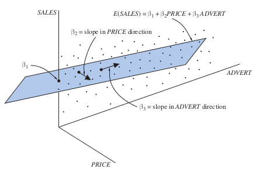

多元回归模型
Big Andy汉堡店需要评估价格策略和广告支出对销售的影响（数据集：andy.dat）。经济模型为： \[SALES=\beta_1+\beta_2PRICE+\beta_3ADVERT\] 由于城市大小对销售额影响很大，我们只选择小城市作为样本。\(PRICE\)可采用某个价格指数。相应的计量模型为： \[SALES=E(SALES)+e=\beta_1+\beta_2PRICE+\beta_3ADVERT+e\] 其中，系统部分是一个平面，称为回归平面。

一般的多元线性回归模型为： \[y=\beta_1+\beta_2x_2+\beta_3x_3+\cdots+\beta_Kx_K+e\] 相应的，本例模型可以改写为： \[y=\beta_1+\beta_2x_2+\beta_3x_3+e\] 我们作如下假设：
- \(E(e)=0\)
- \(\mathrm{var}(e)=\sigma^2\)
- \(\mathrm{cov}(e_i,e_j)=0\)
- \(e\simN(0,\sigma^2)\)
从而，被解释变量具有性质：
- \(E(y)=\beta_1+\beta_2x_2+\beta_3x_3\)
- \(\mathrm{var}(y)=\mathrm{var}(e)=\sigma^2\)
- \(\mathrm{cov}(y_i,y_j)=\mathrm{cov}(e_i,e_j)=0\)
- \(y\sim N[(\beta_1+\beta_2x_2+\beta_3x_3),\sigma^2]\)